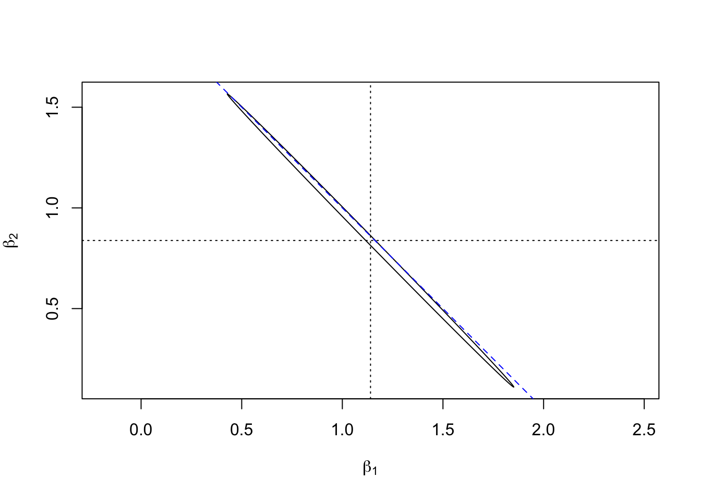
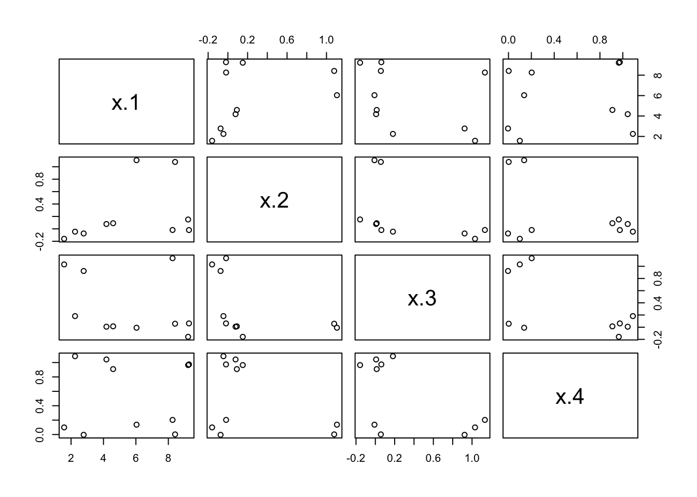

Section 15 Multicollinearity
Definition 15.1 In linear regression, Multicollinearity denotes the situation when the columns of the design matrix \(X\) are (approximately) linearly dependent.
The columns of \(X\) are linearly dependent, if and only if there is a \(v \in \mathbb{R}^{p+1}\) such that \(X v = 0\). The columns are approximately linearly dependent, if there is a vector \(v\) such that \(X v \approx 0\).
15.1 Consequences of Multicollinearity
In the derivation of the least squares estimator \(\hat\beta = (X^\top X)^{-1} X^\top y\) we had to assume that the matrix \(X^\top X\) is invertible. If the columns of \(X\) are linearly dependent, \(X^\top X\) is no longer invertible and the least squares estimate is no longer uniquely defined.
Example 15.1 Consider the following data:
| \(y\) | \(x_1\) | \(x_2\) |
|---|---|---|
| 2 | 1 | 1 |
| 4 | 2 | 2 |
| 6 | 3 | 3 |
In this case, an exact match with no residuals can be achieved as \(y = x_1 + x_2\), i.e. for \(\beta_1 = \beta_2 = 1\). But this solution is not unique: we could just as well write \(y = 2 x_1\) or \(y = 2 x_2\). Any choice of \(\beta_1\) and \(\beta_2\) with \(\beta_1 + \beta_2 = 2\) will lead to zero residuals.
The problem in the example above occurs, since the two input columns in the data are identical. The same problem, in a less obvious way, would occur in datasets with more inputs when one column of \(X\) can be written as a linear combination of other columns. This is a problem of the given input data, not of the responsees or of the statistical model.
In the case where there is only approximate linear dependency between the columns of \(X\), the inverse \((X^\top X)^{-1}\) exists and an estimate \(\hat\beta\) can be computed, but there will be huge uncertainties in some of the stimated coefficients. We illustrate this effect using a numerical example.
Example 15.2 Here we simulate data which has similar characteristics to the toy example above: we have very similar two inputs, the sum of which nearly equals the output. We fit a model without the intercept, so that there are only two coefficients to estimate and plotting these is no problem.
set.seed(20211101)
n <- 10
y <- 2 * (1:n)
x1 <- rnorm(10, 1:n, 0.15)
x2 <- rnorm(10, 1:n, 0.15)
m <- lm(y ~ 0 + x1 + x2)Similar to the approach in section 6, we can plot a confidence ellipse. (Don’t worry about the details of the commands used to plot the ellipse.)
sigma.hat <- summary(m)$sigma
X <- model.matrix(m)
svd <- La.svd(t(X) %*% X)
alpha <- 0.05
f.crit <- qf(1 - alpha, ncol(X), nrow(X) - ncol(X))
phi <- seq(0, 2*pi, length.out = 201)
circ <- rbind(cos(phi), sin(phi)) * sqrt(f.crit * ncol(X) * sigma.hat^2)
ellipse <- svd$u %*% (circ / sqrt(svd$d)) + coef(m)
plot(ellipse[1,], ellipse[2,], type = "l", asp = 1,
xlab = expression(beta[1]),
ylab = expression(beta[2]))
abline(2, -1, lty = "dashed", col = "blue")
abline(v = coef(m)[1], lty = "dotted")
abline(h = coef(m)[2], lty = "dotted")
We can see that, as in the toy example above, the confidence region
places \((\beta_1, \beta_2)\) close to the line where \(\beta_1 + \beta_2 = 2\)
(the diagonal dashed line), but there is considerable uncertainty about
where on this line the coefficients are located. The effect gets
more pronounced when the amount of noise in the definition of x1 and x2
is reduced.
There are two, slightly different effects of multicollinearity:
In the case of exact multicollinearity, \(X^\top X\) is not invertible. If the columns of \(X\) are approximately linearly dependent, then \((X^\top X)^{-1}\) does exist, but small changes of \(X\) lead to large changes of \((X^\top X)^{-1}\) and numerical computation of the inverse is strongly affected by rounding errors.
If the columns of \(X\) are approximately linearly dependent, the computed value of the estimator \(\hat\beta\) is strongly affected by small changes to the system: the noise in the model strongly affects \(\hat\beta\) (as demonstrated in example 15.2, above), leaving out a single observation may lead to large changes in \(\hat\beta\) and computation of \(\hat\beta\) is sensitive to rounding errors.
While multicollinearity can make the regression coefficients ambiguous, the outputs \(y\) are not affected. Predictions made using a model where multicollinearity is present are still reliable.
15.2 Detecting Multicollinearity
While collinearity of two columns of \(X\) is easy to spot, for example in a pair scatter plot of the inputs \(x_i\), multicollinearity which involves more than two columns can be harder to notice. The condition number of \(X\) is a quantitative measure of how close \(X\) is to multicollinearity.
Definition 15.2 The condition number of \(X\) is defined to be \[\begin{equation*} \kappa(X) = \frac{\sigma_\mathrm{max}(X)}{\sigma_\mathrm{min}(X)}, \end{equation*}\] where \(\sigma_\mathrm{max}(X) = \sqrt{\lambda_\mathrm{max}(X^\top X)}\) is the largest singular value of \(X\), computed as the square root of the largest eigenvalue of \(X^\top X\), and similarly \(\sigma_\mathrm{min}(X) = \sqrt{\lambda_\mathrm{min}(X^\top X)}\) is the smallest singular value of \(X\), computed as the square root of the smallest eigenvalue of \(X^\top X\).
As a rule of thumb, if \(\kappa(X) < 10\) there are no significant problems with multicollinearity, and if \(\kappa(X) > 30\) the regression problem sufferes severe problems with multicollinearity. In the case where the columns of \(X\) are exactly linearly dependent, we have \(\sigma_\mathrm{min}(X) = 0\) and \(\kappa(X) = \infty\).
In R, the condition number can be computed using the
function kappa(). The function
can either be called as kappa(X, exact = TRUE),
where X is the design matrix,
or as kappa(m, exact = TRUE)
where m is the object returned by lm(). If the optional
argument exact = TRUE is omitted, only an approximate result
is returned (using a faster algorithm).
Example 15.3 Consider the following toy dataset:
y x.1 x.2 x.3 x.4
1 7.37 4.182 0.078 0.008 1.043
2 9.86 6.039 1.106 -0.009 0.137
3 13.44 9.220 0.151 -0.158 0.965
4 12.95 8.260 -0.018 1.133 0.203
5 13.05 8.415 1.078 0.057 0.002
6 13.17 9.272 -0.019 0.062 0.974
7 5.28 1.575 -0.160 1.031 0.099
8 8.18 4.595 0.091 0.014 0.909
9 5.13 2.779 -0.074 0.923 -0.004
10 6.80 2.248 -0.045 0.182 1.088To inspect these data, we use a pair scatter plot of the input variables, leaving out the responses in column 1:

While there are visbile patterns, there are no clear signs of a linear dependency between any two columns. To see whether there are problems with multicollinearity, we fit a linear model and determine the condition number.
[1] 97.38214Since the condition number is larger than 30, we can say that the data shows severe multicollinearity.
To find out which variables are involved, we can use singular value decomposition. This allows to write \(X\) as \(X = U D V^\top\), where \(D\in\mathbb{R}^{(p+1)\times(p+1)}\) is a diagonal matrix and \(U\in\mathbb{R}^{n\times(p+1)}\) and \(V\in\mathbb{R}^{(p+1)\times(p+1)}\) are matrices with orthonormal columns.
$d
[1] 20.3002516 2.0294781 1.8122508 1.2526330 0.2084597
$v
[,1] [,2] [,3] [,4] [,5]
[1,] -0.14024576 -0.5552821 -0.04218055 -0.62161197 0.5327403485
[2,] -0.98554152 0.1088264 0.04131956 0.12311216 0.0009051211
[3,] -0.04170949 0.4036310 0.21603327 -0.75981456 -0.4597323397
[4,] -0.03395454 -0.6495911 0.55665792 0.11926737 -0.5027780067
[5,] -0.07839927 -0.3081105 -0.79998442 -0.08306065 -0.5020431792We used the optional argument nu = 0 to tell R that we won’t need the
matrix \(U\). The diagonal elements \(\sigma_0(X), \ldots, \sigma_{p}(X) \geq 0\),
stored in s$d, are the singular values of \(X\) in decreasing order.
We can find the condition number using these values:
[1] 97.38214This agrees with the value for \(\kappa(X)\) we found above.
Finally, the columns \(v_1, \ldots, v_{p+1}\) of s$v are called the (right)
singular vectors of \(X\). We can use these vectors to identify which variables
are involved in multicollinearity: It is easy to show that \(\| X v_k \| =
\sigma_k(X)\), so every “small” \(\sigma_k(X)\) corresponds to a vector \(v_k\)
which describes an approximate linear dependency between the columns of \(X\).
Looking at \(\sigma_4(X)\) (the 5th element of s$d) we get
[1] 0.533 0.001 -0.460 -0.503 -0.502Rounding the numbers some more and remembering that the first value corresponds to the intercept, we get that \[\begin{equation*} -0.5 \cdot 1 + 0.5 \cdot x_2 + 0.5 \cdot x_3 + 0.5 \cdot x_4 \approx 0 \end{equation*}\] or, equivalently \[\begin{equation*} x_2 + x_3 + x_4 \approx 1. \end{equation*}\] Looking back over the original numbers we see that this relation indeed holds.
15.3 Mitigations
There are various ways problems resulting from multicollinearity can be addressed:
Sometimes columns are linearly dependent, because a redundant input is present. Removing one of the input variables in a group of linearly dependent inputs can solve this problem.
The inputs can be transformed by choosing new variables as functions of the original inputs. For example, in example 15.2 one could try the input variables \(\tilde x_1 = (x_1 + x_2) / 2\) and \(\tilde x_2 = (x_1 - x_2) / 2\). The confidence ellipse shown above indicates that it should be possible to get good estimates for the coefficient corresponding to \(\tilde x_1\).
If \(n\) is small, the problem may be resolved by getting more data. In particular, for \(n < p+1\), we always have strict multicollinearity, so in this case we definitely need more data.
Alternative estimation approaches may be used. The basic idea is to sacrifice the requirement that \(\hat\beta\) is unbiased, in exchange for a large variance reduction. In the next section we will discuss “ridge regression” as an example of this approach.
Summary
- Multicollinearity can lead to numerical problems and large variances in the estimated regression coefficients.
- The condition number of the design matrix can be used to detect multicollinearity.
- Singular value decomposition can used to better understand linear dependencies in the inputs.